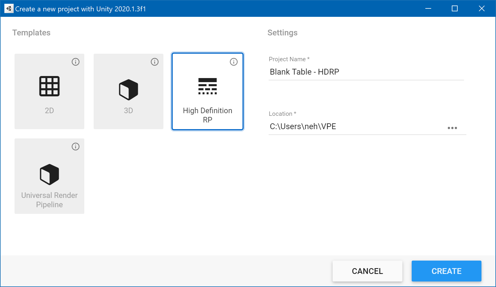
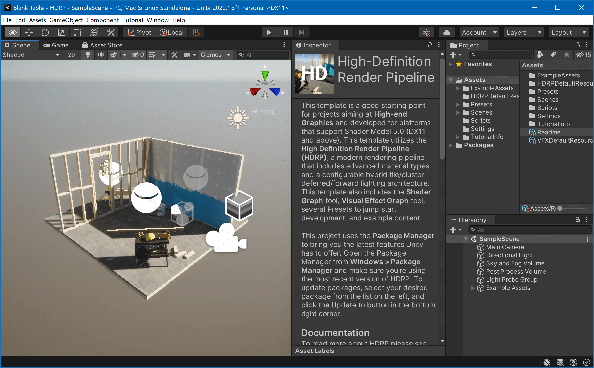
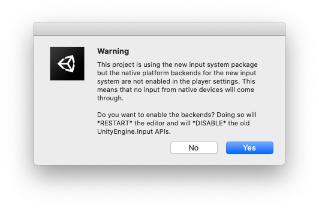

Installing VPE
Unity
In order to start creating or tweaking tables with VPE, the first thing you'll need to install is Unity. You will need a developer account, which is free.
Note
As long as you don't use VPE for a game that makes $100K or more in revenue or funding a year, the free Personal plan is sufficient for you.
Unity uses an application called Unity Hub to update itself and provide quick access to your projects. The install process is straight-forward and documented here if you run into troubles.
When installing Unity, use the latest 2020.1 version. You can leave all the other options unchecked.
Once Unity is downloaded and installed, you'll need to create a new project. Unity has multiple render pipelines, and you'll be asked which render pipeline to use in your project:

You'll have the choice between:
- 2D - For 2D games. VPE doesn't support this renderer.
- 3D - Unity's original built-in renderer.
- High Definition RP - Unity's new HDRP, used for high-end platforms.
- Universal Render Pipeline - Unity's URP is aimed at mobile and low-end platforms.
We recommend using HDRP. It's not as mature as the built-in renderer, but it's able to achieve better visuals, and it's what Unity will be focusing on in the future.
Note
If you're just creating a throw-away project for testing out gameplay, the built-in renderer is more tested and faster to set up. We also support the URP, but it's not as well tested as the other two pipelines.
Next, enter a project name and a location for your project. We recommend putting the render pipeline into the name, because in the future you might test out other pipelines and thus need to create additional projects.
Tip
We recommend creating a VPE folder in your user directory (which is called %userprofile%), to contain all the VPE-related files. In this example that would be %userprofile%\VPE\Test Table - HDRP, which usually resolves to C:\Users\{username}\VPE\Test Table - HDRP.
You're of course free to set this up however you want, but that's what we'll be referring to in the rest of the documentation.
Clicking Create launches the Unity editor, pulls in all the dependencies for the new project, and compiles them. This can take a minute or two.
HDRP Setup
If you create an HDRP project, Unity provides you with a sample scene:

It's best to start by removing the unneeded objects. In the hierarchy, select:

and press delete.
Similarly, to clean up the project, get rid of the extra assets in the project view:

VPE Source Code
Now you have your project and scene set up, let's bring VPE into the project. Go to the GitHub page and download the source code. You can do that by clicking on the green Code button, and choosing Downlaod ZIP.
As mentioned above, we recommend extracting this into the %userprofile%\VPE\VisualPinball.Engine folder:

In Unity, go to Window -> Package Manager. Click on the "plus" icon on the top left corner of the window, and choose Add package from disk. Choose package.json in the root folder of the extracted VPE source code.
This will take a moment as Unity downloads and compiles all of VPE's dependencies. If during this time, you see the following warning:

Click Yes. When complete, you should now have a Visual Pinball menu in the editor.